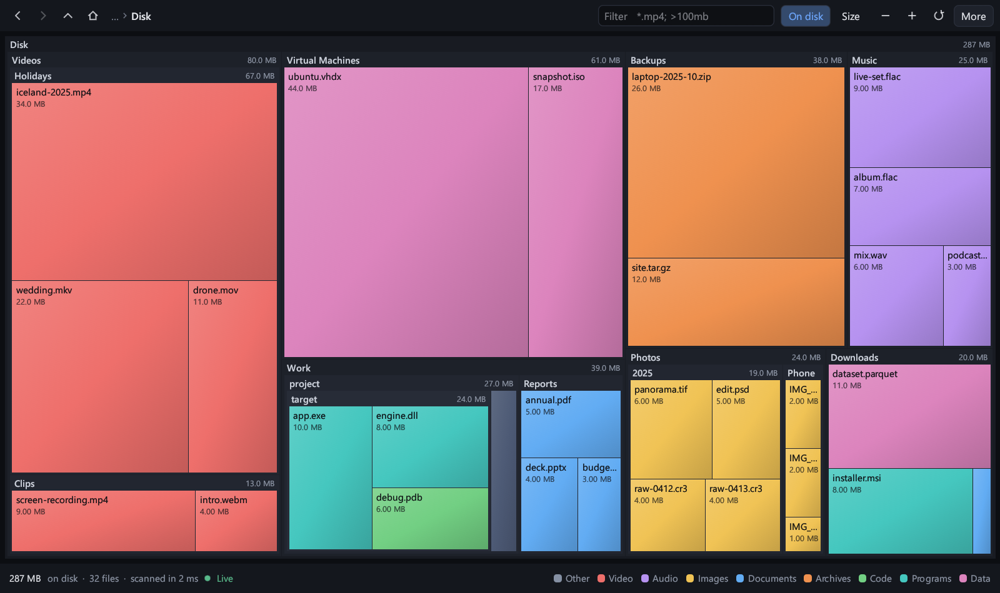

See what is filling your disk
SpaceScope scans a drive or folder and draws every file as a rectangle sized by the space it takes. The biggest things are the biggest shapes.
to read a 712 GB system drive holding 1.3 million files, straight from the NTFS file table.
Stays current
Delete, download or build something and the map redraws itself. No rescan.
Filter as you type
*.mp4; >100mb
Windows 10 and 11
One exe. Nothing to install.
Debian and Ubuntu
X11 and Wayland.
Free and open
MIT licence, written in Rust.
Releases
What you get

Colour is the kind of file. Double-click a folder to zoom in, right-click for open, show in file manager, copy path and move to trash.
Why it is quick
It asks the disk once
Run as administrator on Windows and SpaceScope reads the NTFS master file table in one pass instead of opening every folder. Without admin rights it still gets a whole folder's sizes in a single system call.
It only draws what you can see
Folders too small to read stay closed and tiny files merge into one tile, so a million files become a few thousand rectangles, drawn in one batch.
It never blocks the window
Scanning, filtering and layout run on their own threads. You can zoom around while the scan is still going.
Measured, not promised
| Scan | Files and folders | Time |
|---|---|---|
| Whole C: drive, as administrator | 1,311,000 | 2.4 s |
| Whole C: drive, standard user | 1,350,000 | 8 to 10 s |
| Home folder, Windows | 585,000 | 1.4 to 1.9 s |
| Home folder, Ubuntu | 491,000 | 2.3 s |
One machine: 16 logical cores, NVMe SSD, Windows 11 with Defender on, Ubuntu under WSL2, files already in the system cache. The first scan after a reboot is slower for a standard user (49 s for the whole drive). Totals were checked against PowerShell and du and match to the byte.
Install
Windows
Unzip and run spacescope.exe. To use the fast drive scan, choose More, then Restart as administrator.
spacescope.exe C:\Users\me
Debian and Ubuntu
Ubuntu 22.04 or newer, Debian 12 or newer.
sudo apt install ./spacescope-amd64.deb spacescope